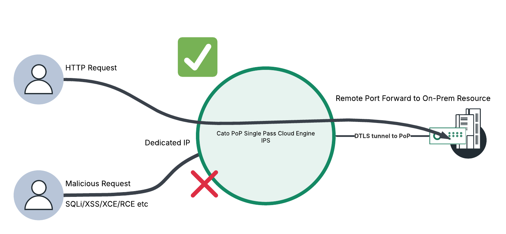
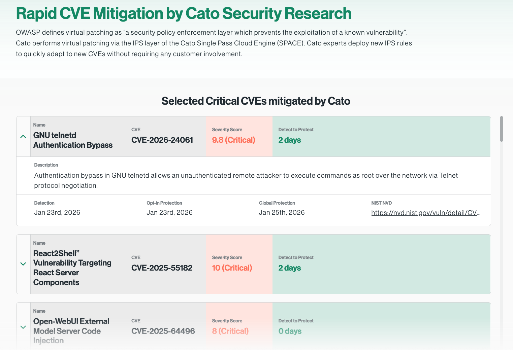
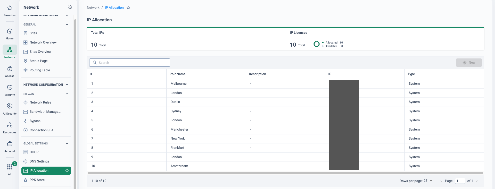

Why this matters
Most organisations still have services that must face the internet from on-premise infrastructure — and every one of them is a target for automated scanning and exploitation from the moment it goes live. The traditional answer is a stack of appliances at the edge: firewalls, WAFs, reverse proxies — each with its own patch cycle, its own downtime window, and its own line in the audit report.
Increasingly the driver is not just security, it is compliance. The frameworks customers are measured against all demand demonstrable controls over public-facing services:
ISO 27001
A standard to establish, implement and maintain information security — including controls over externally exposed systems and their patching.
NIS2
The EU framework for protecting critical infrastructure — ensuring security and resilience, and preventing, deterring and mitigating major incidents.
SOC 2
Auditing of controls on security, availability, confidentiality and privacy — with evidence the auditor can actually inspect.
Public-facing services vs. the audit
Four questions come up in almost every conversation about published services:
Public facing
“How can I protect against attackers whilst ensuring services are running?”
Audit evidence
“How do I check I have controls in place — and show the auditor proof?”
Virtual patching
“Services need to stay active; I can’t afford downtime to patch.”
Governance
“How do I ensure I keep to compliance requirements as services and threats change?”
- Reputational impact — lowering share value
- Industry regulatory requirements — financial fines
- Not able to sign new customers; the business unable to grow at the desired pace
- Not able to insure the business against cyber attacks
“Which services do you publish to the internet today — and when the next critical CVE lands on one of them, how long are you exposed before you can take it down to patch?”
Inbound IPS, by the numbers
Cato’s IPS runs inside the Single Pass Cloud Engine (SPACE) at every PoP, with signatures written and deployed by Cato Security Research — no customer change windows, no appliance firmware. The signature set is heavily weighted towards exactly the traffic a published service receives:
Coverage spans CVEs from 1999 through 2026, with strong recent growth — nearly every CVE Cato writes a signature for protects inbound-facing services, keeping published services up and protected. All figures are from the source deck (Mar 2026); the 2026 count is a running total, so check the current number with Cato before quoting it.
Where this sits in the Cato SASE platform
- An allocated static IP at the London PoP is the only address the published service exposes.
- Inbound requests terminate at the PoP, where SPACE and inbound IPS inspect and scrub every one.
- SQLi, XSS and RCE payloads are dropped at the PoP edge; new CVE signatures arrive by virtual patching.
- Clean traffic is remote-port-forwarded down the Socket’s outbound DTLS tunnel; no inbound ports open.
Publish the service, not the server
Remote Port Forwarding gives you an allocated IP at a Cato PoP of your choosing — that IP, not your site, is what the world sees. Inbound connections terminate at the PoP, where the SPACE engine and inbound IPS inspect and scrub every request. Flexible access controls filter inbound sources, and only clean traffic is forwarded down the socket’s existing DTLS tunnel to the on-prem resource. No inbound firewall holes, no DMZ, no infrastructure or network topology changes — and no appliances to deploy on site.

A secure way to publish services
Businesses can safely allow connections into the organisation — the allocated IP at the PoP fronts the service, so the site itself stays dark.
Scrubbed before it arrives
The SPACE engine inspects and secures every inbound flow — SQLi, XSS, XXE, RCE, path traversal and command injection are dropped at the PoP edge.
Flexible access controls
Inbound source filtering restricts who can even reach the published port — by source IP or country — before deeper inspection begins.
Evidence for the auditor
Every allowed and blocked inbound request is an attributed event — the demonstrable control ISO 27001, NIS2 and SOC 2 all ask for.
Rapid CVE mitigation — protected before you patch
When a critical CVE lands on a service you publish, the race is between the exploit kits and your next maintenance window. Cato performs virtual patching in the IPS layer of SPACE: Cato Security Research writes the signature and deploys it to every PoP worldwide, without customer involvement and without touching the vulnerable service. The service stays up; the exploit path is closed.

Show the live page in the meeting — it is public, updated as new CVEs are mitigated, and a strong proof point that this is an operating practice, not a datasheet claim.
What this looks like live

![CMA Security → Remote Port Forwarding, published revision, with the feature toggle enabled and a two-rule table. Rule 1, Inbound Web Server Access, is greyed out as disabled and maps a London external IP (redacted) on port 8080 to internal 172.16.1.2 port 80 with an Allow List whose traffic source is Any, flagged with an amber warning triangle. Rule 2, Dev1 AVD, maps a London external IP (redacted) on port 33389 to internal 10.5.3.19 port 3389 over TCP and UDP with an Allow List of redacted source ranges.](../assets/img/cma-rpf-rules.png)